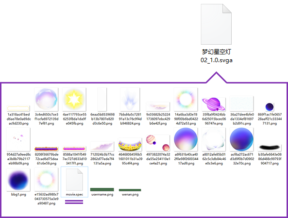
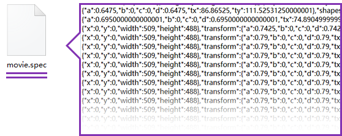
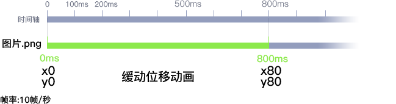
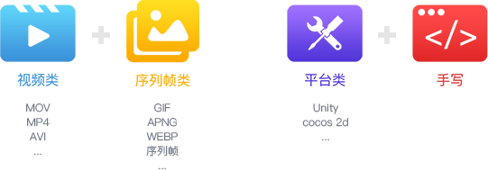

#SVGA
一篇面向初学者的文章，希望让你对SVGA有一定了解。
###svga是啥？
SVGA是一种动效实现的解决方案。
umm…另一个角度讲，就是一种动效输出的文件格式。
直接解压一个SVGA 1.0的文件你就会明白：


里面没有序列帧，没有swf。里面的图片，是动画素材，而动画的信息，就是用movie.spec记录下来。
换句话说，SVGA是把动画用代码的方式记录了下来，然后放到各端的播放器上播出来。(这就导致，An、Ae里的滤镜、效果，要支持比较困难，因为代码能记录的动画是比较有限的。)
###SVGA记录动画数据的特点

一般动画，可以用两种方式来记录动画数据，用文字描述可以翻译成：
#####记录方式一，记录关键帧动画：
1 | 图片.png，在0ms，xy:0,0；在800ms，xy:80,80；缓动函数是xxx |
#####记录方式二，记录每帧的动画数据：
1 | 图片.png，在0ms，xy:0,0；在100ms，xy:15,15；在200ms，xy:30,30；在300ms，xy:45,45；在400ms，xy:50,50；...... 在800ms，xy:80,80； |
方式一类似AE的显示，有每个关键帧的数据。
方式二是记录每一帧的数据，相当于所有帧都k帧，记录下所有帧的数据。
SVGA使用的是方式二。
可以看出方式一的数据量少，但是方式二的好处，是播放器端（就是客户端），不用再去解析这些动画，只需要读取和显示每一帧里，图片资源都在什么位置。特别是有缓动的动画，方式一会把缓动的解析的计算量给到播放器端去实现，播放器端就需要消耗更多计算量，性能消耗大。
而方式二没有这个问题，方式二性能会好点的。
当然也有缺点，就是如果时长太长，帧数多，数据就非常多。之前做猫的动效的时候，时长太长的SVGA加载巨慢，可能就是因为帧数过多导致。
也就是说，SVGA适合时长较短的动画，而直播间里的动效，一般8秒以内，最适合SVGA。
方式一的另一个特点，理论上帧率随实际环境决定，不是由输出的文件决定。开发可以设定在环境中以多少帧率播放，理想情况按播放器支持的最高帧率播放。
而方式二只能以输出时候设定的帧率进行播放。
####SVGA和Lottie
Lottie就是用方式一来记录动画。
目前来说，简单理解就是性能比SVGA差点，对矢量的支持好点。
这里不展开，更多信息参考链接：
lottie官网
Github上的lotte
###SVGA的优势是什么？
常见的动效实现方案：

分成几个角度来看这些方案：（放例子？）
- 动画质量：颜色还原、帧率。GIF稍微色差、没有半透明通道。
- 播放性能：复杂的动画会更卡，视频也比较耗性能。（见附图一）
- 文件大小：文件大，从服务器下载文件会花更多时间，播放时占用设备内存也更大。 （见附图一）
- 使用成本：平台类需要接入平台、和SVGA一样动画制作不能用滤镜等。 手写类需要设计师提供具体的动效标注。（附图二）
实现方案 动画质量 播放性能 文件小 低成本 得分 视频类 5 1 1 5 12 序列帧类 3 3 2 5 13 平台类 5 5 3 1 14 手写类 5 5 3 1 14 SVGA 5 5 3 4 17 SVGA评分达到最高的17分。 当然了，不同的使用场景下会有不同的考虑。在直播间礼物动效的角度，SVGA无疑是最适合的。 ####附图一